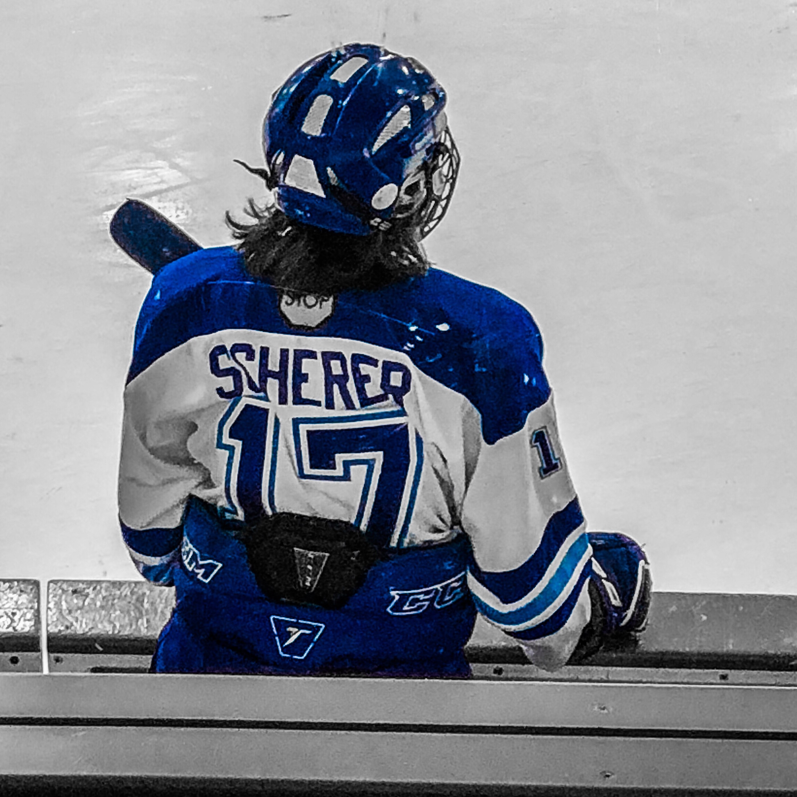

Hobbies & Interests

Hockey
I'm passionate about hockey—both playing and watching the game. The sport teaches valuable lessons in teamwork, discipline, and perseverance. I enjoy staying active through sports and engaging with my interests, which helps me maintain a balanced lifestyle while pursuing my academic and professional goals.

Computers
I'm quite interested in learning how computers operate and how technology may be applied to problem-solving and information analysis. I like to learn about tools, processes, and the technical aspects of making decisions based on data.